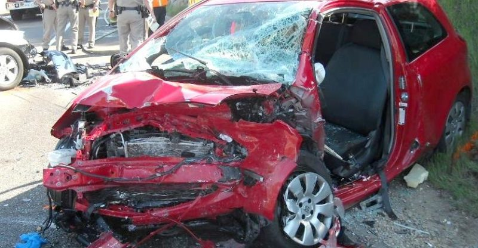

"Approximately 1 in 10 people who use marijuana will become addicted. When they start before age 18, the rate of addiction rises to 1 in 6."- SAMHSA.gov


DON'T DRIVE WHILE HIGH!
Learn The Facts
While driving, the driver are affected by:
- Slow reaction time
- Diminished coordination
- Diminished focus on cues such as signals and sounds

Tetrahydrocannabinol (THC) contributes to most of marijuana's psychological effects, affecting the memory, movement, coordination, and time perception.
- THC levels in the 1990s: 3-4%
- THC levels today: 15-20%

Marijuana is the most commonly used "illegal" drug in the United States
Groups who have used marijuana in 2019
- Ages 12-17: 3.3 million
- Ages 18-25: 12.0 million
- Ages 26+: 33.0 million
DON'T BE HIGH AS A KITE AND YOU MAY AVOID A TRAGEDY
